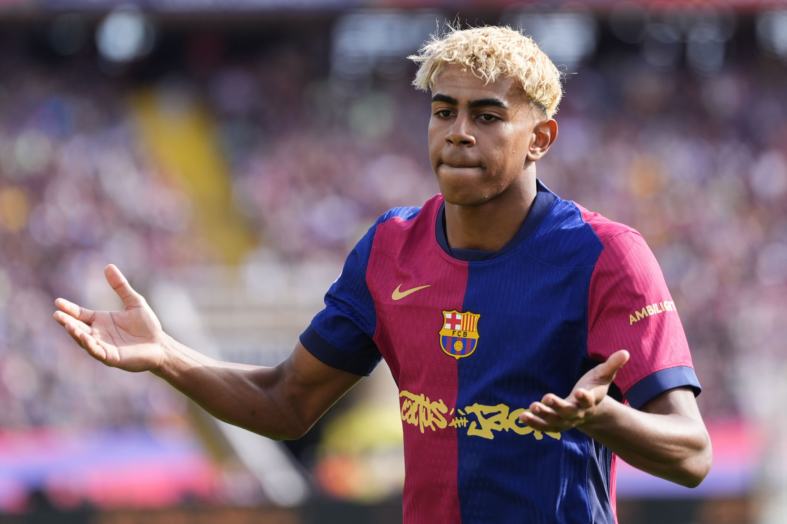

Every summer there’s a new name. A sixteen-year-old does something ridiculous in a pre-season friendly, the clip has millions of views by the evening, and by the next morning he’s “the next Messi.” I’ve watched this cycle so many times now that I can almost predict it: the highlight reel, the price tag, the comparisons, and then, too often, the quiet disappointment when a teenager turns out to be exactly that—a teenager.
Lamine Yamal is the face of it right now, and to be fair, he’s the rare case where the hype might actually be underselling him. Starting for Barcelona at sixteen, winning the Euros with Spain, scoring that curling goal against France in the semi-final—that isn’t hype, that’s history. But for every Yamal there are dozens of kids who were handed the same label and simply couldn’t carry it.
Remember Freddy Adu? A boot deal at fourteen, called the future of American soccer before he had played a professional game, and then a career spent moving from club to club, always chasing the expectations that arrived before he did. Or Bojan at Barcelona, who broke scoring records in the academy and later spoke openly about the anxiety that came with being the club’s next big thing. None of that was their fault. The weight was put on them by everyone else.
What has changed is the speed and the money. When I was a kid, you heard about a young talent from a magazine or a friend who had seen him play. Today, scouting data, social media clips and transfer rumours turn a promising youngster into a global name in a week. Even the word “wonderkid” is one a lot of us learned from Football Manager, where a seventeen-year-old with the right potential rating was worth more than any veteran. Real clubs now spend fortunes in the same way, paying for what a player might become rather than what he is.
And yet, the story doesn’t always end badly—it just doesn’t follow the script. Martin Ødegaard joined Real Madrid at sixteen and was written off a few years later after loans in the Netherlands and Spain. People called him a flop. Today he is the captain of Arsenal and one of the most intelligent midfielders in Europe. He wasn’t overhyped. He was just rushed, and then given the time he needed.
So are wonderkids overhyped? I don’t think the talent is. What’s overhyped is the timeline. We expect a finished player at seventeen, a world-beater at nineteen, and a disappointment at twenty-two if neither happened. Football has always needed patience; the game hasn’t changed that much. Maybe we have.
The next time a teenager lights up a pre-season friendly, I’ll try to enjoy it for what it is: a glimpse, not a promise.